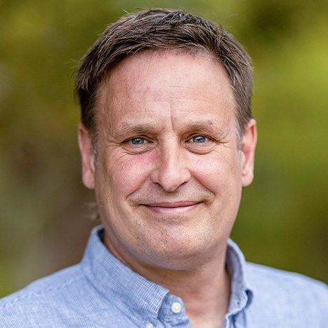
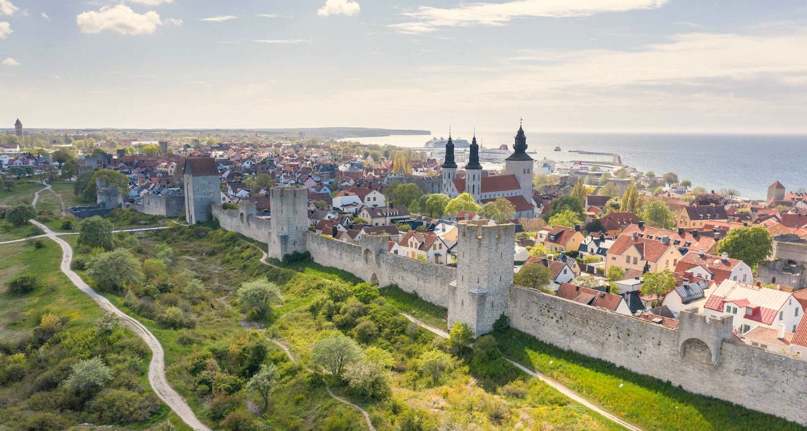
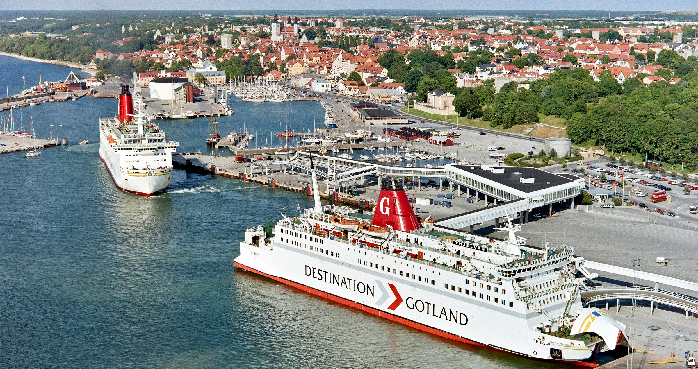

| Topic | Author | Links |
|---|---|---|
| WEEK 1 | ||
| 10-Jun-2024 (Mon) | ||
| Introduction to RaukR | Marcin Kierczak & Sebastian DiLorenzo | |
| Functions and scripts | Sebastian DiLorenzo | Slides, Lab |
| Best Coding Practices in R | Marcin Kierczak | Slides, Lab |
| Literate programming with Quarto | Roy Francis | Slides, Lab |
| Debugging, Profiling and Optimisation | Marcin Kierczak | Slides, Lab |
| 11-Jun-2024 (Tue) | ||
| Vectorization | Sebastian DiLorenzo & Marcin Kierczak | Slides, Lab |
| Parallelization | Sebastian DiLorenzo & Marcin Kierczak | Slides, Lab |
| Object-oriented programming | Marcin Kierczak | Slides, Lab |
| 12-Jun-2024 (Wed) | ||
| Tidyverse | Marcin Kierczak | Slides, Lab |
| git with R | Sebastian DiLorenzo | Slides, Lab |
| reticulate: Combining R with Python | Nina Norgren | Slides, Lab |
| 13-Jun-2024 (Thu) | ||
| Plotting with ggplot2 | Roy Francis & Lokesh Manoharan | Slides, Lab |
| How to repeat yourself with Purrr | Jenny Bryan, Posit | Repo |
| 14-Jun-2024 (Fri) | ||
| R Packages | Jenny Bryan, Posit | |
| Web apps with Shiny | Roy Francis & Lokesh Manoharan | Slides, Lab |
| WEEK 2 | ||
| 17-Jun-2024 (Mon) | ||
| Statistics and machine learning in R | Nikolay Oskolkov | Slides, Lab |
Raukr 2023


Raukr 2019


Guest instructors

Software engineer at Posit
Data science professor
University of British Columbia
Vancouver, Canada

Project lead for Futureverse
Associate professor in Epidemiology & Biostatistics
University of California
San Francisco, USA
Syllabus
We will be covering a number of topics in R programming with focus on R features helpful in bioinformatics and computational biology data analyses workflow:
- Reproducible research in R (Quarto, Rmarkdown, Renv)
- Collaborative work using Git and GitHub
- R code style guide & best practices
- Code debugging, optimization and profiling
- Parallelization and vectorization in R
- Crafting your own functions
- Object oriented programming and R classes: S3, S4, R6 and RC
- Anatomy of an R package: Creating your own package from scratch
- Tidy data flow using tidyverse
- Using the language of graphics: ggplot2
- Developing web applications using Shiny
- R and Python integration using reticulate
- Team project work - developing data analyses workflow in R using acquired skills
Course materials
Course materials will be made available at the beginning of the workshop and will remain open and publicly accessible online for at least a year. You can check out the materials from 2023.
Sessions
Our daily schedule begins with a morning session from 08:30 to 12:30, starting with breakfast from 08:30 to 09:00 and a 30-minute break at 10:30. Lunchtime is from 12:30 to 13:30. The afternoon session follows, running from 13:30 to 17:00, with a 30-minute coffee break at 15:00.
Please note that due to varying time zones, online guest lectures might occur after 17:00.
Throughout the majority of sessions, our instructors and teaching assistants will be available to aid you with practical exercises and answer any queries you may have.
#| eval: true
#| include: false
library(dplyr)
library(leaflet)
library(readxl)
library(gt)
library(tibble)
dfr <- readxl::read_xlsx("map.xlsx")Entry requirements
This workshop is aimed at both Ph.D. students and researchers within life sciences who are already using R for bioinformatics data analyses and who would like to start using R at a more advanced level. In order for you and other participants to benefit the most, you should consider yourself eligible if you are comfortable with:
- Reading and transforming data,
- Installing and using third-party packages and
- Plotting using standard R graphics.
Selection
We can accomodate ~42 participants. Selection criteria include correct entry requirements, motivation to attend the workshop as well as gender and geographical balance. We do accept international applicants, but applicants affiliated to a Swedish institution are prioritized.
Once the registration period concludes, we will review your application and notify you of our decision. If accepted, you will have three working days to confirm your participation. Failure to do so would imply your inability to attend, and we will proceed accordingly. Once you confirmed, our course administrator will proceed with invoicing.
Fee
The fee for academic participants is 8000 SEK subsidized by academic grants. Fee for non-academic participants is 16 000 SEK.
If you register and are admitted but fail to attend without a valid reason (sickness or urgent family matter), you will still be liable for the entire fee.
Included in the fee
- Participation in lectures and workshops
- Mingle reception with snacks and drinks
- Daily breakfast/coffee, lunch and afternoon coffee during the workshop
- One official course dinner
- Surprise social activities
Not included in the fee
- Accomodation
- Travel to and from Visby
- Daily dinners
Certification & Credits
Please refer to our FAQs.
Location

Source: VisitSweden
The workshop takes place in the city of Visby nestled on the island of Gotland, Sweden. This medieval town, dating back to the 12th century, is a UNESCO world heritage site. For more information, visit Visit Sweden and Gotland Tourism.


{kind=link}
{kind=link}
{kind=link}
{kind=link}
{kind=link}
{kind=link}
{kind=link}
{kind=link}
{kind=link}
{kind=link}
{kind=link}
{kind=link}
{kind=link}
{kind=link}
{kind=link}
{kind=link}
{kind=link}
Travel
Visby is accessible from mainland Sweden by flight or ferry. See Gotland tourism website for information.
Visby airport provides connections to Stockholm, Malmö, and Gothenburg, with a flying time of approximately 1 hour from Stockholm. Bus connection from the airport to the city centre takes about 10 min. Alternatively, there are airport taxis as well.
Ferry connections are available from Stockholm (Nynäshamn) to Visby through Destination Gotland or Vikingline. The journey time from Nynäshamn to Visby is about 3 hours. The ferry terminal in Visby is walking distance from Uppsala University Campus Gotland (800m) and our suggested accomodations.

Source: DestinationGotland
Venue
#| echo: false
#| eval: true
#| output: asis
dfr <- dfr %>%
mutate(address = paste0("<a target='_blank' href='", url, "'>", label, "</a>,", address)) %>%
mutate(address = gsub(",", "<br>", address))
icons <- awesomeIcons(icon = dfr$marker_icon, markerColor = dfr$marker_colour, iconColor = "#FFFFFF", library = "fa")
cat(knitr::knit_child(input = "assets/_child-map.qmd", envir = environment(), quiet = TRUE))The workshop is held on Campus Gotland, Uppsala University. Here is the full address:
B27 Lärosal
Campus Gotland
Uppsala University
Cramérgatan 3
621 57 Visby
Gotland, Sweden
The classroom windows may be left open in case the room gets warm. If you are easily disturbed by external noise, it might a good idea to bring noise cancelling headphones for practical labs (we are close to Visby harbor). Additional extension cables might come in handy too.
For visual impressions from previous workshops, visit our Gallery.
Accomodation
Participants are responsible for arranging their own accommodation. When booking accommodation, make sure it is located at a walking distance from Campus Gotland. Here are a few suggestions below. These are also marked on the map.
#| echo: false
readxl::read_xlsx("map.xlsx") %>%
filter(marker_icon == "bed") %>%
mutate(label = paste0("<a target='_blank' href='", url, "'>", label, "</a>")) %>%
select(label, address) %>%
setNames(c("Name", "Address")) %>%
gt() %>%
fmt_markdown(columns = Name) %>%
cols_width(Name ~ px(250)) %>%
tab_style(
style = cell_text(weight = "bold"),
locations = cells_column_labels()
) %>%
opt_row_striping(row_striping = FALSE)Meals
A cafeteria is available onsite just outside the lecture hall for breakfast and lunches as well as coffee and snacks. Dinners are not included. Breakfast is not included on Weekends. For further information, see FAQs.
Key dates
#| echo: false
tibble::tribble(
~Date, ~Milestone,
"22-Feb-2024", "Application opens",
"1̶4̶-̶A̶p̶r̶-̶2̶0̶2̶4̶ 2̶3̶:̶5̶9̶", "A̶p̶p̶l̶i̶c̶a̶t̶i̶o̶n̶ d̶e̶a̶d̶l̶i̶n̶e̶",
"17-Apr-2024", "Notification of acceptance/decline",
"**26-Apr-2024 23:59**", "Extended application deadline",
"30-Apr-2024", "Notification of acceptance/decline for extended deadline",
"09-Jun-2024", "Arrival to Visby, mingle in the evening",
"10-Jun-2024 - 20-Jun-2024", "Workshop",
"20-Jun-2024", "Project presentations, certificates issued, lunch included",
) %>%
gt() %>%
fmt_markdown(columns = Date) %>%
cols_width(Date ~ px(300)) %>%
tab_style(
style = cell_text(weight = "bold"),
locations = cells_column_labels()
) %>%
opt_row_striping(row_striping = FALSE)Register
Before proceeding, please ensure you have read all the information on this page as well as our FAQs. Click below to access the online registration form.
#| eval: false
#| echo: false
# <iframe width="100%" height="100%" src="https://docs.google.com/spreadsheets/d/e/2PACX-1vSIci4xlYTisAysZOricXo1DtN7xCxy0cAy3q2vHSPAPt-NP_XGVHmwzZ7DUJUVyEdHOwdwWN3AkorX/pubhtml?gid=0&single=true&widget=true&headers=false"></iframe>#| echo: false
#| fig-height: 6
library(googlesheets4)
library(lubridate)
library(readr)
library(toastui)
library(dplyr)
library(tidyr)
fn_rle <- function(x){
r <- rle(x)
return(rep(paste(r$values,1:length(r$values),sep="-"),times=r$lengths))
}
googlesheets4::gs4_deauth()
url_schedule = "https://docs.google.com/spreadsheets/d/1svAmuAzNRG3Ujj73qbC9DsOSzZ7jGyol79pLxuLD_fg"
dfr <- googlesheets4::read_sheet(url_schedule, sheet="schedule-vertical", col_types = "c") %>%
mutate(time=as.character(time)) %>%
tidyr::fill(date, .direction="down") %>%
tidyr::drop_na(type) %>%
mutate(start=lubridate::dmy_hm(paste(.$date, .$time))) %>%
mutate(end=start+lubridate::dminutes(30)) %>%
mutate(grp=paste0(fn_rle(type),"-",fn_rle(title)),.by=date) %>%
group_by(date,grp) %>%
summarise(type=type[1],body=body[1],title=title[1],start=start[1],end=tail(end,n=1)) %>%
ungroup() %>%
mutate(calendarId=as.character(as.integer(as.factor(type)))) %>%
mutate(start=as.character(lubridate::ymd_hms(start)),end=as.character(lubridate::ymd_hms(end))) %>%
dplyr::select(calendarId,title,body,start,end,type) %>%
mutate(category="time")
colors <- data.frame(
id=c("1","2","3","4","5"),
name=sort(unique(dfr$type)),
color=c(rep("#2c3e50",5)),
backgroundColor=c("#fcf3cf","#a9dfbf","#fae5d3","#e8daef","#d6eaf8"),
borderColor=c("#f7dc6f","#7dcea0","#f0b27a","#bb8fce","#85c1e9")
)
rownames(colors) <- colors$id
calendar(dfr, view="week", navigation=TRUE, defaultDate=as.Date("2024-06-10"), height=790) %>%
cal_week_options(startDayOfWeek = 1, hourStart=8, hourEnd=21, eventView="time", showNowIndicator = TRUE) %>%
cal_props(colors)